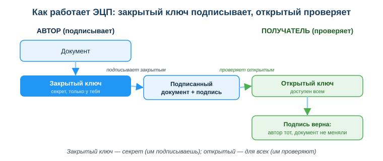
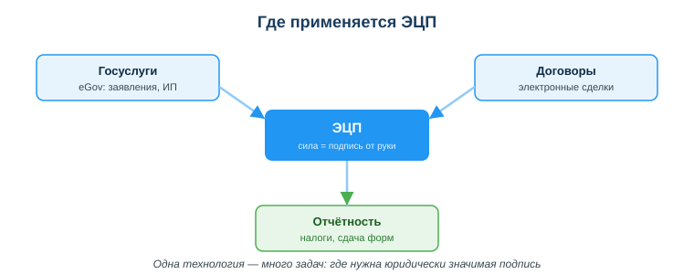

Электронная цифровая подпись (ЭЦП)
Практическая ситуация
Тебе нужно подать заявление на eGov, зарегистрировать ИП или подписать договор с заказчиком, но ты не в одном городе с ним и не хочешь ехать в офис. Как поставить подпись, которая по силе равна подписи от руки, не вставая со стула? Ответ — электронная цифровая подпись (ЭЦП).
ЭЦП — это ключ, которым ты подтверждаешь свою личность и согласие в цифровом мире. Для разработчика это ещё и наглядный пример того, как криптография работает на практике: за «галочкой подписать» стоит пара математически связанных ключей.

Что ты научишься делать
- объяснять, что такое ЭЦП и какую юридическую силу она имеет;
- описывать, как устроена пара ключей (закрытый/открытый) и кто чем пользуется;
- получать и применять ЭЦП в РК через НУЦ и NCALayer;
- безопасно хранить ключ и действовать при его утечке.
Почему это важно
ЭЦП — это вход в цифровое государство: без неё не подашь заявление, не оформишь сделку, не сдашь отчётность онлайн. Понимать, как она устроена, важно, чтобы не отдать свою «цифровую руку» чужому человеку и не потерять контроль над юридически значимыми действиями.
Связь с профессией: разработчик постоянно встречает асимметричную криптографию — в HTTPS, в подписи кода и пакетов, в токенах и API-ключах. ЭЦП — простейший и самый понятный пример этой же идеи: один ключ секретный, другой публичный. Разобравшись с ЭЦП, ты легче поймёшь безопасность в своих проектах.
Учимся читать схему
Посмотри на схему «Как работает ЭЦП» выше. Ответь на вопросы:
- каким ключом автор подписывает документ, а каким получатель проверяет подпись?
- какой из двух ключей нельзя никому отдавать и почему?
- что именно подтверждает успешная проверка подписи — только авторство или ещё что-то?
Главное понятие
Электронная цифровая подпись (ЭЦП) — реквизит электронного документа, подтверждающий его автора и неизменность; по Закону РК она равнозначна собственноручной подписи.
Проще: ЭЦП не «картинка подписи», а результат криптографического преобразования документа закрытым ключом. Любой может проверить этот результат открытым ключом и убедиться, что подписал именно ты и документ после подписания не меняли.
Что такое ЭЦП и пара ключей
Электронная цифровая подпись подтверждает две вещи сразу: авторство (подписал именно ты) и неизменность (документ не правили после подписания). По Закону РК ЭЦП равнозначна собственноручной подписи — значит, всё подписанное ею юридически твоё.
ЭЦП работает на паре ключей (асимметричная криптография):
- Закрытый (приватный) ключ — секретный, хранится только у тебя; им ты подписываешь.
- Открытый ключ — доступен всем; им проверяют твою подпись.
Логика простая: подписал закрытым → любой проверил открытым, что подписал именно ты и документ не меняли. Подделать подпись без закрытого ключа практически невозможно — на этом и держится доверие.
Как получить и применять ЭЦП в РК
- Получить ключи в НУЦ РК (Национальный удостоверяющий центр) — на eGov, в ЦОНе или онлайн.
- Хранить файл-ключ безопасно: личный защищённый носитель (флешка, удостоверение личности, защищённое хранилище).
- Для подписания на порталах установить программу NCALayer — она связывает браузер и твой ключ.
- Подписать документ или заявление → подпись прикрепляется к нему, и его можно проверить открытым ключом.

Одна и та же технология закрывает много задач: госуслуги на eGov, электронные договоры и сделки, налоговая и иная отчётность — везде, где нужна юридически значимая подпись.
Мини-кейс
Студент скачал ключ ЭЦП и оставил его в папке «Загрузки» на общем компьютере колледжа. Риск: любой, кто сядет за этот ПК, может подписать документ от его имени — и ответственность будет на студенте. Следующий шаг: перенести ключ на личный защищённый носитель и не хранить на чужих устройствах.
Разбор типичной ошибки
Ошибка. Передать файл-ключ ЭЦП и пароль другому человеку «чтобы он подписал за меня».
Почему это ошибка. Это всё равно что отдать свою подпись и паспорт: любое подписанное действие юридически считается твоим. Если ключ используют не так, отвечать будешь ты.
Как правильно. ЭЦП использует только владелец. Если нужно делегировать действие — оформляют доверенность или отдельный ключ для уполномоченного лица, но не передают свой.
Практика
Ответь письменно:
- Объясни своими словами, почему закрытый ключ нельзя никому передавать, а открытый — можно публиковать.
- Опиши по шагам, как получить и применить ЭЦП в РК (от НУЦ до подписания через NCALayer).
Образец (часть ответа на пункт 1): «Закрытым ключом ставится подпись, поэтому тот, у кого он есть, может подписывать от моего имени — а это юридически значимо. Открытый ключ только проверяет подпись и ничего не подписывает, поэтому его безопасно отдавать всем».
Самопроверка
- Я знаю, что ЭЦП по Закону РК равнозначна собственноручной подписи.
- Я умею объяснить роль закрытого и открытого ключей (кто подписывает, кто проверяет).
- Я понимаю, как получить ЭЦП через НУЦ РК и подписать документ через NCALayer, и как безопасно хранить ключ.
Подумай
- Где в твоей жизни уже могла бы пригодиться ЭЦП и какие действия она бы упростила?
- ЭЦП — это та же идея, что и HTTPS-сертификаты или подпись кода. Почему разработчику полезно понимать асимметричную криптографию не только ради ЭЦП?
Итог
Что теперь делать:
- ЭЦП равна собственноручной подписи и основана на паре ключей (асимметричная криптография);
- закрытый ключ — секрет, не передавай никому; открытый — для проверки, доступен всем;
- получай ЭЦП через НУЦ РК, подписывай на порталах через NCALayer;
- храни ключ на защищённом носителе; при утечке немедленно отзови его.
Полезные ссылки
Источник: Закон РК «Об электронном документе и электронной цифровой подписи»; материалы eGov.kz и НУЦ РК; рамка цифровых компетенций (DigComp 2.2).
Материал разработан рабочей группой ТОО «Колледж Хекслет Казахстан» и одобрен к использованию в обучении решением Педагогического совета.